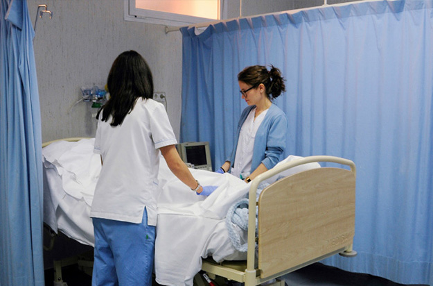
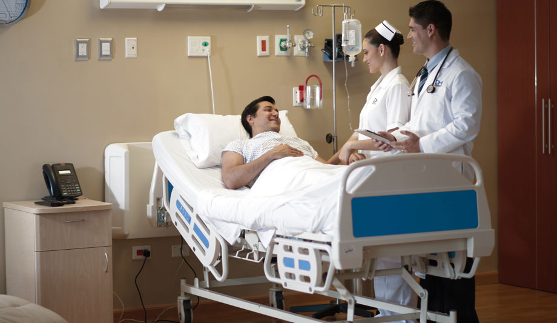
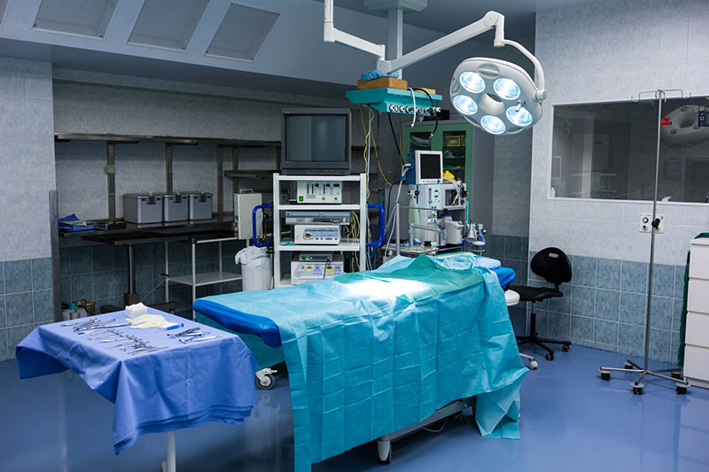
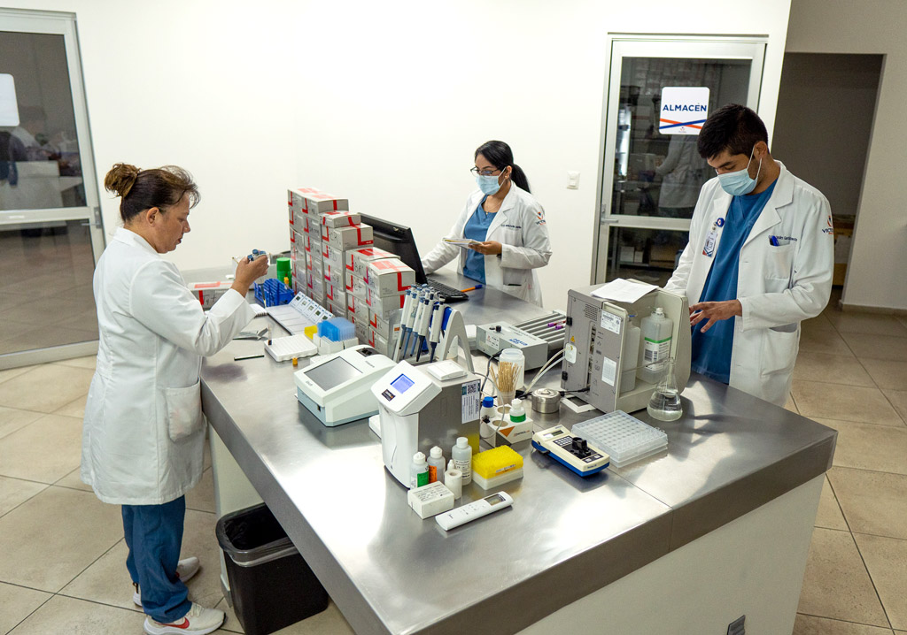
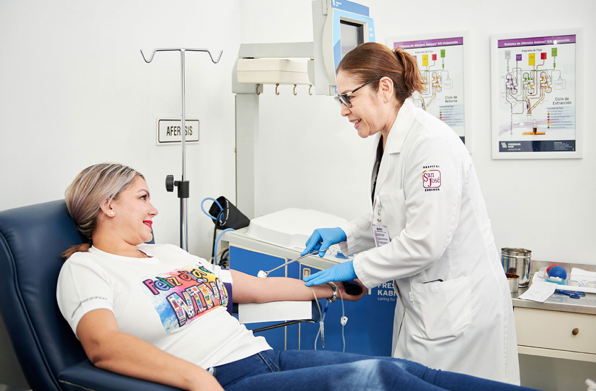
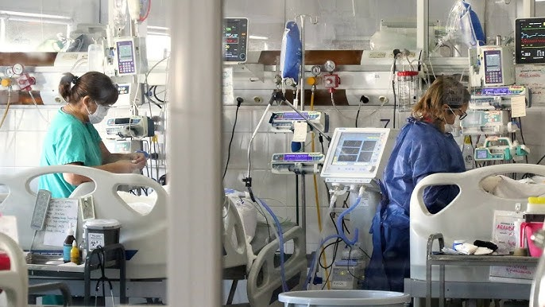

Atención médica inmediata las 24 horas para emergencias y situaciones críticas.
Atención médica programada con especialistas para diagnóstico y seguimiento de pacientes.

Estancia y cuidado integral para pacientes que requieren supervisión médica continua.

Instalaciones equipadas para la realización de procedimientos quirúrgicos seguros.
Suministro de medicamentos con control y asesoría profesional para los pacientes.

Análisis clínicos precisos para el diagnóstico y control de enfermedades.

Recolección, almacenamiento y distribución segura de sangre y sus componentes.
Estudios de diagnóstico por imagen como rayos X, ultrasonido y tomografías.

Atención especializada para pacientes en estado crítico con monitoreo constante.